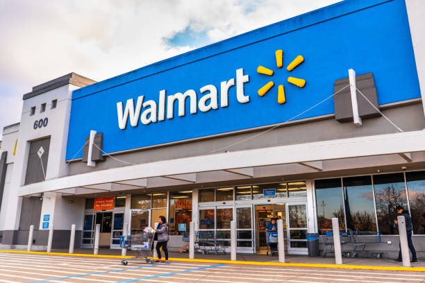

WalMart
Nuestro Compromiso
• Walmart de México y Centroamérica es una empresa
dedicada al sector comercio.
Operamos en seis países: Costa Rica, El Salvador,
Guatemala, Honduras, México y Nicaragua.
Tenemos una amplia variedad de formatos, que
incluyen tiendas de descuento (Bodega Aurrera
Express, Despensas Familiares y Palí),
(Superama, Supertiendas Paiz,
Despensa de Don Juan, La Unión y Más x Menos),
bodegas (Bodega Aurrera, Mi Bodega Aurrera y
Maxi Bodega), hipermercados (Walmart, Hiper Paiz
e Hipemas) y clubes de precio con membresías
(Sam's Club y ClubCo).
• Gracias a esto, tenemos la oportunidad de hacer la
diferencia en todas las comunidades en las que
estamos presentes.
